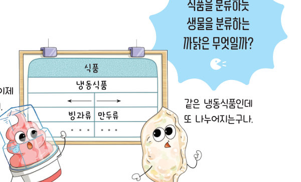
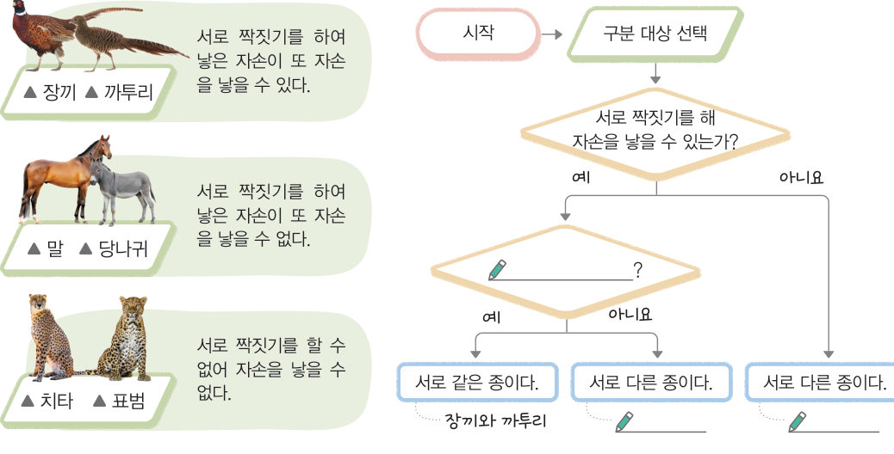
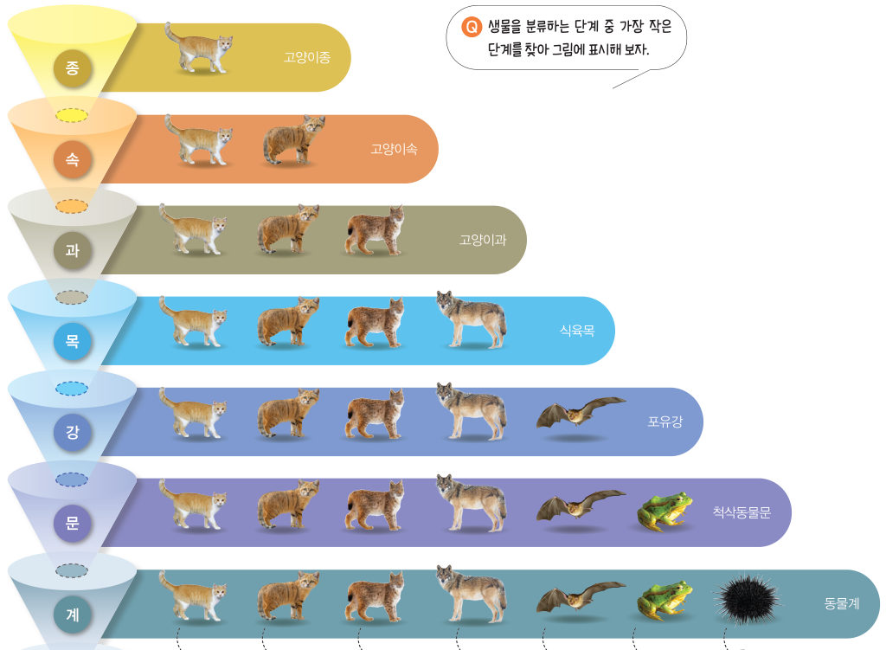

살아있는 교과서 · Ⅱ. 생물의 구성과 다양성 · 2. 생물다양성과 분류 · 02 56~57쪽
생물을
생물을
분류하는 단계
“같은 냉동식품인데 또 나누어지는구나.” “잘 가. 우리는 이제 헤어져야 해.” 식품을 분류하듯 생물을 분류하는 까닭은 무엇일까? 순서도로 같은 종인지 가려내고, 분류 사다리로 두 생물이 얼마나 가까운지 알아보자.
🎯 이 단원을 배우면 — 종 개념을 이해하고 생물을 분류하는 단계를 설명할 수 있다.
해 보기같은 종인 생물 알아보기 56쪽
생물은 어떻게 분류할까?
마트에서는 여러 종류의 상품을 특징에 따라 분류한다. 생물도 고유한 특징에 따라 분류할 수 있다. 생물을 분류하는 단계 중 가장 작은 단계를 종이라고 한다.

구분할 짝을 고르고 자료를 읽은 다음, 순서도의 질문에 답해 보자. 빈칸이었던 두 번째 질문이 무엇인지도 생각해 보자.
1순서도의 두 번째 질문 ‘?’에 들어갈 말은
💬완성한 순서도를 바탕으로 생물을 같은 종으로 분류할 수 있는 조건을 이야기해 보자.
교과서생물을 분류하는 단계 57쪽
두 생물이 자연에서 서로 짝짓기를 하여 자손을 낳고, 그 자손이 또 자손을 낳을 수 있으면 두 생물을 같은 종으로 분류할 수 있다. 또한 비슷한 특징을 지닌 종을 모아 더 큰 분류 단계인 속으로 묶을 수 있다. 같은 방식으로 점차 더 큰 분류 단계로 묶으면 그림 2-8과 같이 계까지 나타낼 수 있다. 이와 같이 생물을 분류하면 수많은 종류의 생물을 체계적으로 연구할 수 있어 생물다양성을 이해하는 데 도움이 된다.

분류 사다리두 생물은 얼마나 가까울까?
두 생물을 고르면 계부터 종까지 분류 단계를 비교해 줘요. 초록색은 같은 무리, 주황색은 다른 무리예요. 더 작은 단계까지 같을수록 더 가까운 생물이에요.
1고양이와 가장 가까운 생물은 이고, 가장 먼 생물은 이다. 고양이와 늑대가 함께 속하는 가장 작은 단계는 이다.
스스로 확인하기56쪽 학습 목표를 달성했는지 확인해 보자 57쪽
1개념 확인 생물을 분류하는 단계는 가장 작은 단계인 ( )에서 속, 과, 목, 강, 문, ( )까지 있다.
2사고력 진돗개, 풍산개, 삽살개 등 생김새가 다른 여러 종류의 개들이 서로 같은 종인지 알고 싶다면 무엇을 조사해야 할지 설명해 보자.
🧩 두 번째 블록 · 힌트 조각 1 (57쪽)
산호와 잘피 사이에서는 자손이 생기지 않으므로 산호와 잘피를 ( ) 종으로 분류한다. → 다음 조각은 ‘생물을 분류하는 체계’에서!
5분 테스트생물을 분류하는 단계
1생물은 고유한 특징에 따라 여러 종으로 할 수 있다.
| ② 생물을 분류하는 가장 작은 단계는 종이다. | |
| ③ 두 생물의 짝짓기로 태어난 자손이 자손을 낳을 수 없는 경우도 서로 같은 종으로 분류한다. | |
| ④ 생물을 종에서부터 특징이 비슷한 것끼리 점차 큰 단계로 묶으면 계까지 분류할 수 있다. |
⑤ → 속 → → 목 → 강 → 문 →
2분류 사다리에서 고양이·모래고양이·호랑이·여우·늑대를 비교해 보고 옳으면 O, 옳지 않으면 X를 골라 보자. (호랑이: 고양잇과 표범속, 여우: 갯과 여우속, 늑대: 갯과 개속)
| ⑥ 고양이는 호랑이보다 여우와 더 가깝다. | |
| ⑦ 모래고양이와 늑대는 같은 목에 속한다. | |
| ⑧ 호랑이와 늑대는 공통되는 특징이 없다. | |
| ⑨ 여우는 늑대보다 호랑이와 더 가깝다. | |
| ⑩ 식육목은 척삭동물문보다 더 작은 분류 단계이다. |
스스로 정리하기생물을 분류하는 단계 64쪽
2생물을 분류하는 단계
종 < < 과 < 목 < < 문 < 계
제출학생 정보 · 제출하기
모든 활동을 마친 뒤 제출하면 전체가 한 번에 채점되고 피드백이 나타나요. 답안은 선생님 스프레드시트(중1 탭)에 기록돼요.